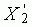
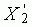
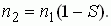
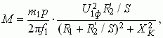
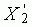
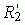
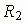
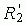
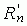
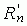

; R1, X1 и
; R1, X1 и ,- активное, индуктивное сопротивления обмотки статора и приведенные сопротивления обмотки ротора.
,- активное, индуктивное сопротивления обмотки статора и приведенные сопротивления обмотки ротора.2. ОСНОВНЫЕ ХАРАКТЕРИСТИКИ АД
Одной из основных характеристик АД является механическая характеристика n2 = f(М) - зависимость частоты вращения n2 от момента М на валу двигателя (рис. 19.4). Естественная механическая характеристика 1 (см. рис. 19.4 и рис. 19.5) асинхронного двигателя описывается уравнением

При увеличении нагрузки на валу скольжение S увеличивается, а частота вращения ротора снижается на 5...10%, т. е. механическая характеристика n = ƒ (M) АД является жёсткой (см. рис. 19.4);

Изменение направления вращения ротора АД - реверсирование - осуществляется переключением любых двух проводов трехфазной системы, питающей двигатель.
Вращающий момент АД пропорционален квадрату фазного напряжения U1ф сети и зависит от скольжения S, т. е.

где m1 - число фаз статора; ХК = X1 +; R1, X1 и,- активное, индуктивное сопротивления обмотки статора и приведенные сопротивления обмотки ротора.
При увеличении момента сопротивления Мс на валу увеличивается скольжение, что приводит к возрастанию вращающего момента до Мс. Скольжение, при котором момент достигает максимального значения Мmax, называется критическим и находится по выражению Sкр = /ХК.
Критическое скольжение Sкр и пусковой момент Мп зависят от сопротивления цепи ротора (см. кривые 2…4 на рис. 19.5), 
причем момент Мп растёт с увеличением , достигая Мmax при + /ХК, где  - приведенное сопротивление пускового реостата, который используется в АД с фазным ротором для снижения пускового тока, увеличения пускового момента (см. кривую 4 на рис. 19.5, б), обеспечения плавности пуска и регулирование частоты вращения ротора (см. реостатные механические характеристики 2…4 на рис. 19.5, б).
/ХК, где  - приведенное сопротивление пускового реостата, который используется в АД с фазным ротором для снижения пускового тока, увеличения пускового момента (см. кривую 4 на рис. 19.5, б), обеспечения плавности пуска и регулирование частоты вращения ротора (см. реостатные механические характеристики 2…4 на рис. 19.5, б).